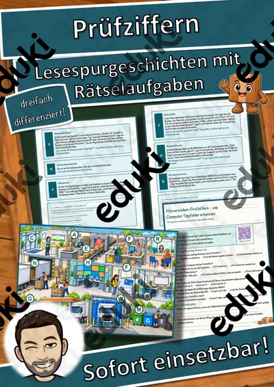
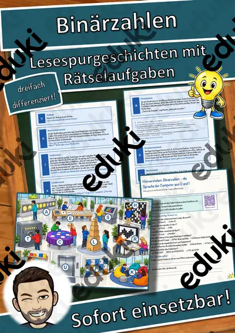
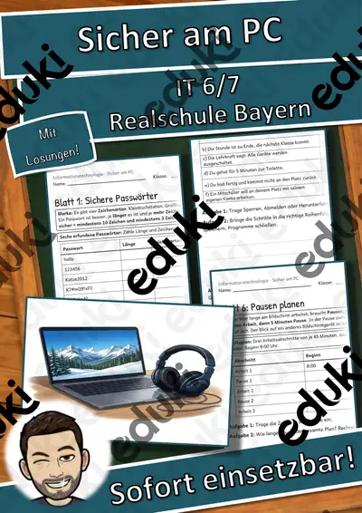
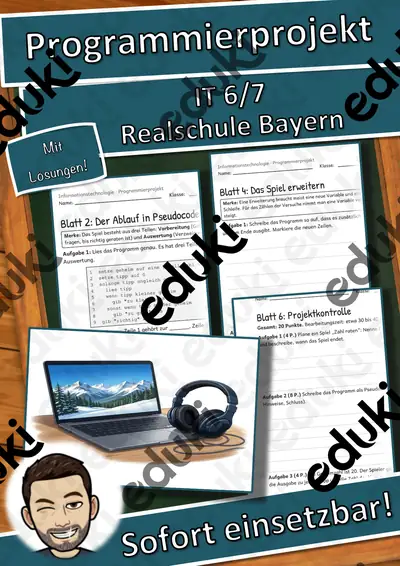
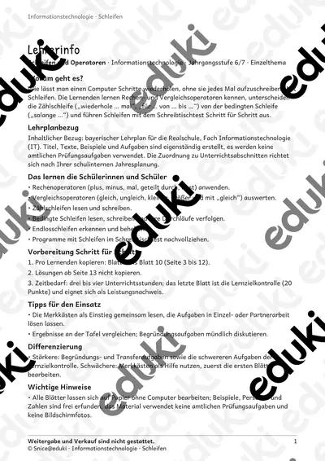
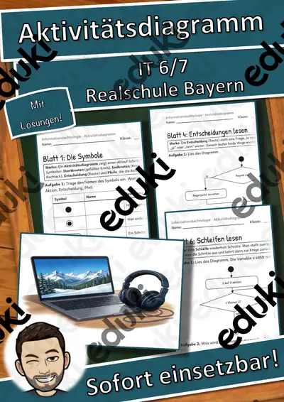
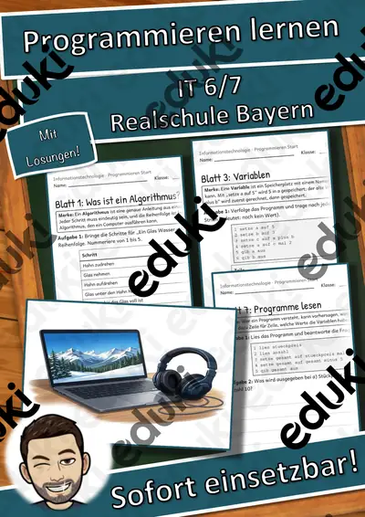
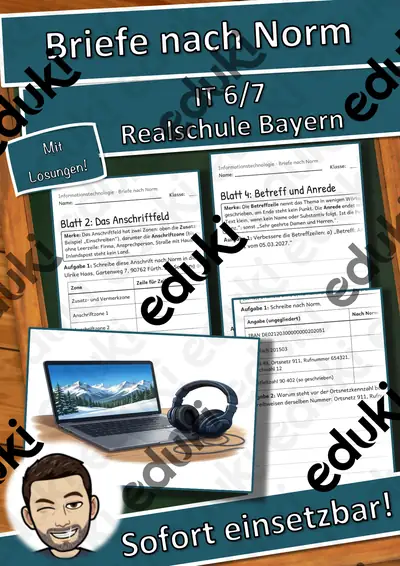

Materialpaket Lesespurgeschichten Informatik Klasse 7: 8 Lesespuren mit Rätselaufgaben, dreifach differenziert

Lesespur: Das neue Smartphone: sicher einrichten – Lesespurgeschichte mit Rätseln (Klasse 7)

Lesespur: Prüfziffern: wie Computer Tippfehler erkennen – Lesespurgeschichte mit Rätseln (Klasse 7)

Lesespur: Chatbots und Sprachassistenten: wie Maschinen sprechen – Lesespurgeschichte mit Rätseln (Klasse 7)

Lesespur: Ein eigenes Spiel programmieren: Figuren, Regeln, Punkte – Lesespurgeschichte mit Rätseln (Klasse 7)

Lesespur: Ampelsteuerung: Zustände und Automaten – Lesespurgeschichte mit Rätseln (Klasse 7)

Lesespur: Barcodes und QR-Codes: Informationen in Strichen und Punkten – Lesespurgeschichte mit Rätseln (Klasse 7)

Lesespur: Binärzahlen: die Sprache der Computer aus 0 und 1 – Lesespurgeschichte mit Rätseln (Klasse 7)

Lesespur: Der Computer – Lesespurgeschichte mit Rätseln (Klasse 7)

Sicher am PC arbeiten – Arbeitsheft mit Lösungen (IT 6/7, Realschule Bayern)

Malware erkennen, Daten sichern – Arbeitsheft mit Lösungen (IT 6/7, Realschule Bayern)

Die Geschichte des Computers – Arbeitsheft mit Lösungen (IT 6/7, Realschule Bayern)

EVA-Prinzip: Eingabe, Verarbeitung, Ausgabe – Arbeitsheft mit Lösungen (IT 6/7, Realschule Bayern)

Diagramme aus Tabellen erzeugen – Arbeitsheft mit Lösungen (IT 6/7, Realschule Bayern)

Eine Präsentation erstellen: Schritt für Schritt – Arbeitsheft mit Lösungen (IT 7/8, Realschule)

Präsentation erarbeiten – Arbeitsheft mit Lösungen (IT 7/8, Realschule Bayern)

Hardware und Software verstehen – Arbeitsheft mit Lösungen (IT 6/7, Realschule Bayern)

Datenflussdiagramme zeichnen und lesen – Arbeitsheft mit Lösungen (IT 6/7, Realschule Bayern)

Tabellen anlegen und formatieren – Arbeitsheft mit Lösungen (IT 6/7, Realschule Bayern)

Zellbezüge: relativ oder absolut – Arbeitsheft mit Lösungen (IT 6/7, Realschule Bayern)

Tabellenkalkulation: Übungsreihe 1 – Arbeitsheft mit Lösungen (IT 6/7, Realschule Bayern)

Bildbearbeitung: Abschlussprojekt Collage – Arbeitsheft mit Lösungen (IT 7/8, Realschule Bayern)

Summe, Mittelwert, Maximum: Funktionen verstehen – Arbeitsheft mit Lösungen (IT 6/7, Realschule)

Tabellenkalkulation: erste Tabelle, erste Formel – Arbeitsheft mit Lösungen (IT 6/7, Realschule)

Gute Bilder gestalten: Aufbau und Wirkung – Arbeitsheft mit Lösungen (IT 7/8, Realschule Bayern)

Bilder, Textfelder und Schriftzüge im Dokument – Arbeitsheft mit Lösungen (IT 6/7, Realschule)

Textverarbeitung festigen: Abschlussaufgabe – Arbeitsheft mit Lösungen (IT 6/7, Realschule Bayern)

Pixel- oder Vektorgrafik: Grafikarten im Vergleich – Arbeitsheft mit Lösungen (IT 6/7, Realschule)

Tabellen im Textdokument gestalten – Arbeitsheft mit Lösungen (IT 6/7, Realschule Bayern)

Ebenentechnik für Einsteiger – Arbeitsheft mit Lösungen (IT 6/7, Realschule Bayern)

Bildbearbeitung: wichtige Begriffe – Arbeitsheft mit Lösungen (IT 6/7, Realschule Bayern)

Bildbearbeitung mit GIMP: Grundlagen – Arbeitsheft mit Lösungen (IT 7/8, Realschule Bayern)

Textdokumente aufbauen: Zeichen, Absatz, Seite – Arbeitsheft mit Lösungen (IT 6/7, Realschule)

Programmierprojekt: ein kleines Spiel – Arbeitsheft mit Lösungen (IT 6/7, Realschule Bayern)

Verzweigungen: wenn-dann-sonst – Arbeitsheft mit Lösungen (IT 6/7, Realschule Bayern)

Schleifen und Operatoren – Arbeitsheft mit Lösungen (IT 6/7, Realschule Bayern)

Aktivitätsdiagramm: Abläufe planen – Arbeitsheft mit Lösungen (IT 6/7, Realschule Bayern)

Programmieren lernen: erste Schritte – Arbeitsheft mit Lösungen (IT 6/7, Realschule Bayern)

Briefe nach Norm: DIN 5008 verständlich – Arbeitsheft mit Lösungen (IT 6/7, Realschule Bayern)

Stationenarbeit Fotografie inkl. Musterübung und Lernvideos

Formular (Informatik) Formular (DIN5008) Telefonnotiz

Grundlagen Materialpaket Word und Informatik (auch Homeschooling)

Grundlagen Informatik Sparpaket: Grundlagen Microsoft Word - Materialpaket (auch Homeschooling)

EDV/Informatik/Word: Word - Übungsaufgabe Stundenplan

EDV/Informatik/Word: Tabelle und Tutorial

EDV/Informatik/Word Texteffekte in Word

EDV/Informatik/Word: Word Formatierung - Schneeflöckchen

EDV/Informatik/Word Formatierungen Word Formatierung (auch Homeschooling)

Arbeiten mit Ordnern - Ordnerstruktur (Lerntheke)

EDV/Informatik/Word: Der Explorer in Windows (Dateimanagement)

EDV/Informatik/Word: EVA-Prinzip (Eingabe - Verarbeitung - Ausgabe) und Sicherungsspiel Informatik

EDV/Informatik/Word: Word Arbeitsoberfläche
Keine Materialien gefunden – versuch einen anderen Suchbegriff oder Filter.